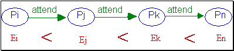
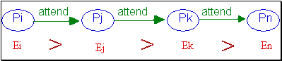

TD : Le dîner des philosophes - prévention des interblocages
Le problème :
- les processus exécutant des programmes utilisateurs en parallèle entrent en conflit pour utiliser les ressources critiques telles que les périphériques (imprimantes, traceurs, d2rouleurs de bandes, lecteurs/enregistreurs de DVD, etc) mais aussi pour obtenir de l’espace mémoire ou l’accès à un fichier. Pour mettre en évidence ce problème nous allons utiliser un autre grand classique : "le diner des philosophe".
- 5 éminents philosophes se retrouvent chaque premier mardi du mois dans un lieu tenu encore secret pour déguster un plat de spaguetti aux truffres. Chaque mardi, la table est mise à l'identique : le plat de spaguetti trone au centre de la table, 5 assiettes sont disposés autour de la table et entre chaque assiette une fourchette est mise à disposition. Comme chacun le sait un philosophe alterne entre deux phases : une phase où il pense et une phase ou il mange. Pour penser, il n'a pas besoin de grand chose, c'est un philosophe. Par contre, pour manger c'est une autre histoire : il doit acquérir une fourchette, puis une autre. Dès qu'il a fini de manger, il repose sur la table, à leur place initiale, les deux fourchettes utilisée. Comme un philosophe est aussi quelqu'un de poli, il ne se sert que des deux fourchettes disposées de part et d'autres de son assiette.
- ce problème est strictement identique au contrôle de l'accès d'une ressource unique qui doit être accédé en mutuelle exclusion,
- la classe à modifier est Chopstick contenu dans Chopstick.Java,
Rappel du cours :
- On considère trois phases dans la manipulation d'une ressource : Requête -- > Allocation/utilisation --> Libération
- Un ressource est dans un des états suivants :
- libre : aucun processus ne possède la ressource
- occupé : selon le mode partagé (la ressource est partageable) ou le mode exclusif (la ressource n'est pas partageable)
-
Si la ressource possède les deux modes (partagé / exclusif) alors la requête précise ce mode
- Tables des conflits pour les ressources possedants 2 modes
|
état = libre |
état = occupé partagé |
état = occupé exclusif |
requête partagée |
OK |
OK |
CONFLIT |
requête exclusive |
OK |
CONFLIT |
CONFLIT |
- Tables des conflits pour les ressources possedants 1 mode :
Requête\Etat |
état = libre |
état = occupé |
demande |
OK |
CONFLIT |
- Un conflit d''accès se traduit par une attente d'un processus d'une ressource possédée par un autre. Cette relation peut s'exprimer par un graphe où les nœuds sont des processus et les arcs sont étiquetés par la ressource à l'origine du conflit. Construisez le graphe des attentes pour votre solution.
- Les familles de solutions vues en cours
- Solution par Détection-Guérison : ces solutions consistent à détecter la situation d'interblocage, et à opérer une modification de l'état global du système pour remédier au problème. Pour cela, le système maintient le graphe de dépendance. A chaque ajout dans le graphe, on recherche la présence d'un cycle. La modification de l'état du système consiste à choisir un processus impliqué dans l'interblocage et à réquisitionner toutes ses ressources. Ce processus redémarre son exécution au début. Choix du processus parmi ceux impliqués dans le cycle:
- Celui qui a produit le cycle
- Celui qui bloque le maximum de ressources. Cette solution a pour objectif de libérer le plus de ressources possibles afin d'augmenter la concurrence potentielle.
- Celui qui bloque le moins de ressources. Cette solution cherche à minimiser le temps de réexécution induit par le retour à la case départ d'un processus.
- Celui qui est le plus récent. Cette solution vise le même critère de choix que la solution précédente.
L'avantage de cette solution est qu'elle n'intervient que lorsqu'un interblocage se produit. Elle n'opère que sur les processus qui sont directement impliqués dans l'interblocage. Les inconvénients de cette méthode sont les surcoûts mémoire et temps CPU liés à la gestion du graphe.
- TimeOut : cette méthode consiste à réaliser le même fonctionnement que la méthode précédente en évitant de construire le graphe de dépendance. On associe à chaque processus un temps limite d'attente. Le dépassement de cette limite est interprété comme la participation à un interblocage. Dans ce cas le processus est arrêté et ses ressources sont requisitionnées.L'avantage de cette solution est qu'elle supprime la manipulation du graphe et les surcoûts induits. Ses inconvénients sont :
- Un processus peut être arrêté même s'il n'y a pas interblocage.
- Un timeout trop court peut conduire à une privation
- Un timeout trop long dégrade les performances du système.
- Solution par Prévention : le principe des algorithmes de ce type de solutions est de garantir que les situations d'interblocage ne peuvent pas se produire.
- L'allocation globale : un processus acquiert l'ensemble de ses ressources simultanéement et les libère petit à petit, dès qu'il n'en a plus besoin. Cette solution a l'avantage de ne jamais créer d'interblocage, et de ne pas nécessiter de mécanisme de retour-arrière.
- L'allocation ordonnée : c'est une adaptation de la solution précédente. Les ressources sont numérotées et tous les processus les acquièrent selon un ordre croissant. Dès qu'une ressource a été libérée, alors plus aucune allocation n'est possible. Comme la solution précédent, cette solution ne crée jamais d'interblocage.
- Solution par Evitement : ces solutions consistent, sans avoir à construire le graphe des attentes, à ne pas construire de cycle. Elles sont basées sur le principe de l'ordonnancement des processus pour éviter la constitution de cycle. Les processus sont numérotés selon un ordre croissant à l'aide d'une estampille.
- Wait or Die : Le processus qui crée le conflit attend la ressource ou est arrêté. Les seules attentes autorisées sont celles qui respectent la relation d'ordre : un vieux processus peut attendre un jeune (i.e. sont numéro est plus petit) mais pas l'inverse. Cette relation d'ordre interdit la création d'une dépendance inverse et donc de cycle. Cette solution est sans réquisition car le processus arrêté (si tel est le cas) est le processus à l'origine de l'arrêt. Cet algorithme donne priorité au processus les plus anciens. Un processus arrêté reprend son exécution avec la même estampille, ceci garantit l'absence de privation.

if(Stamp(Pd)< Stamp(Pr) {
/* Le processus demandeur est plus ancien que celui qui possède la ressource.
Il est mis en attente */
Wait(Pd);
} else {
/* le processus demandeur est plus jeune que celui qui possède la ressouce.
Il est arrêté. */
Stop(Pd);
}
- Wait or Kill : Le processus qui crée le conflit attend la ressource ou son co-relationnaire est arrêté. Les seules attentes autorisées sont celles qui respectent la relation d'ordre. La relation d'ordre interdit la création d'une dépendance inverse et donc de cycle. Cette solution est avec réquisition car le processus arrêté (si tel est le cas) est le processus co-relationnaire à l'origine de l'arrêt. Cet algorithme donne priorité au processus les plus anciens. Un processus arrêté reprend son exécution avec la même estampille, ceci garantit l'absence de privation.

if(Stamp(Pd)>Stamp(Pr) {
/* Le processus demandeur est plus jeune que celui qui possède la ressource.
Il est mis en attente */
Wait(Pd);
} else {
/* le processus demandeur est plus jeune que celui qui possède la ressouce.
Il est arrêté. */
Stop(Pr);
}
- Wound/Wait : Les deux solutions précédentes considèrent qu'il y a création d'un cycle dès que l'on essaie d'établir une dépendance à contrario de la relation d'ordre. Ceci est très fort car il ne peut y avoir cycle que si l'élément considéré est en relation avec deux voisins. Pour éviter que les processus ne soient arrêtés prématuré on introduit par rapport à la seconde solution un état supplémentaire (blessé) qui caractérise une situation transitoire où le processus a déjà été impliqué dans un conflit sans attente ( un processus est en attente sur lui). On donne une chance supplémentaire aux processus impliqués dans cette dépendance en attendant un conflit ultérieur les concernant.
if(Stamp(Pd)>Stamp(Pr) {
/* Le processus Pd est plus jeune que Pr */
if(Wounded(Fd)) {
/* lPd est déjà impliqué dans une dependance à contrario, il est arrêté. */
Stop(Pd);
} else {
/* Pd n'intervient que dans des conflits conforment à la relation d'ordre */
Wait(Fd);
}
} else {
/* le processus Pd est plus ancien que Pr. */
if(Waiting(Fr)){
/* Pr est dèjà impliqué dans une dépendance à contrario. Il est arrêté. */
Stop(Pr);
} else {
/* Pr n'intervient pas dans un autre conflit,
on introduit une dépendance à contrario en le marquant blessé, Pd attend. */
Wound(Pr);
Wait(Pd);
}
}
- Conclusion : toutes les méthodes, à l'exception des méthodes de prévention, nécessitent un retour-arrière pour sortir d'une situation d'interblocage. La mise en œuvre du retour-arrière est complexe et nécessite que soit enregistré l'état global du processus au point de retour, et que d'autre part il soit possible d'annuler les effets des actions que le processus a réalisées jusqu'à l'arrêt de celui-ci.
ATTENTION : en programmation concurrente, il existe un autre mal, tout aussi néfaste aux applications : la famine. Un processus, ne peut jamais accéder à une ressource qu'il attend pour poursuivre son exécution. Dans le cas des philosophes ceci se traduit par le fait qu'un des deux philosophes ne peut pas acquérir les deux fourchettes, parce que les autres philosophes se sont liés contre lui (cohalition).